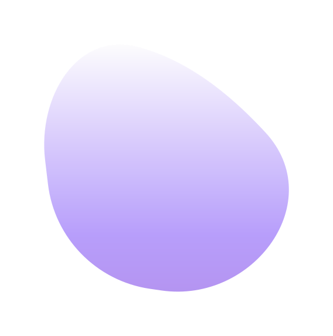
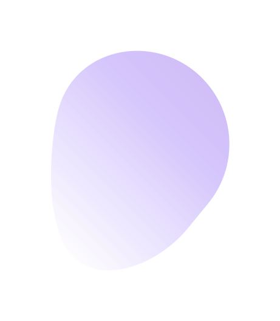

Olá!
Oi, Sou Jorge Luiz
Sou Um Developer Front-End
Estou cursando Engenharia de Software e atualmente faço parte do projeto Oracle ONE na Alura.
Estou cursando Engenharia de Software e atualmente faço parte do projeto Oracle ONE na Alura.
Olá, meu nome é Jorge Luiz Barbosa, tenho 25 anos e sou um desenvolvedor front-end com uma paixão pela criação de interfaces de usuário envolventes e intuitivas. Nasci em Arapiraca/AL, onde estou atualmente cursando Bacharelado em Engenharia de Software.
Desde o início dos meus estudos, estou em constante evolução e aprendizado para me destacar no mercado de trabalho. Por isso, faço parte do programa de educação e empregabilidade da Oracle, ONE (Oracle Next Education), em parceria com a Alura, onde me deram a oportunidade de aprimorar minhas habilidades em Front-end, utilizando tecnologias como HTML, CSS, Javascript, React, aprendendo sobre controle de versão com Git, além de metodologias ágeis, o que o me permite trabalhar de forma mais eficiente e produtiva em equipe.
HTML
CSS
BootStrap
Javascript
React
Tocar teclado
Ouvir Músicas
Assistir Animes
Jogar jogos
Criar landing pages
Em andamento - Unicsul
Em andamento - Udemy
Em andamento - Oracle ONE | Alura
![Imagem do projeto 'Remind It', um aplicativo para salvar notas. Na parte superior, há um cabeçalho com o nome da aplicação. Logo abaixo, na lateral esquerda, há quatro ícones: o ícone para incluir uma nota, o ícone para limpar todas as notas, o ícone para mudar a cor da aplicação e o ícone para mudar o tema do site. Na parte principal, a parte direita, há um espaço reservado para mostrar as notas que o usuário digitou. Na imagem, há quatro notas como exemplo. O projeto foi desenvolvido por Jorge Luiz como parte de um projeto de aprendizado de programação web.](assets/img/remind-it-md.png)
![Imagem do projeto de Decodificador de texto da Alura, com um banner na lateral direita contendo o desenho de um menino segurando uma lupa e abaixo dele o texto 'digite uma mensagem para criptografar/descriptografar'. Na parte principal, a parte direita, encontra-se a logo do projeto, uma letra 'a', que representa a Alura. Abaixo da logo, contém a caixa de texto para inserir o texto e logo abaixo, os botões para criptografar e descriptografar. Acima dos botões, há uma pequena informação indicando que somente letras minúsculas e sem acento, podem ser digitadas. O codificador usa uma cifra especial, em que a vogal 'a' será trocada por 'ai', a vogal 'e' por 'enter', a vogal 'i' por 'imes', a vogal 'o' por 'ober' e a vogal 'u' por 'ufat'. O projeto foi desenvolvido por Jorge Luiz, como parte de um projeto de aprendizado de programação web.](assets/img/decodificador-md.png)
Clone da landing page do Spotfiy, usando HTML, CSS e Bootstrap
Repositório Ver demo![Imagem do projeto 'Landing Page do Spotify', que apresenta a aparência da página inicial do serviço de streaming de música Spotify. O cabeçalho da página inclui o logotipo do Spotify na parte superior esquerda e cinco links na parte superior direita: 'Premium', 'Ajuda', 'Baixar', 'Inscrever-se' e 'Entrar'. No centro da página, há um carrossel com o título 'Música para todos' e abaixo, dois botões: 'Aproveite o Spotify Free' e 'Obter Spotify Premium'. O projeto foi desenvolvido utilizando tecnologias web como HTML, CSS e JavaScript com o objetivo de replicar a aparência da página inicial do Spotify e fornecer uma experiência similar aos usuários.](assets/img/spotify-landingpage-md.png)
Quer entrar em contato comigo?
Preencha o formulário ao lado e entrarei em contato o mais rápido possível.